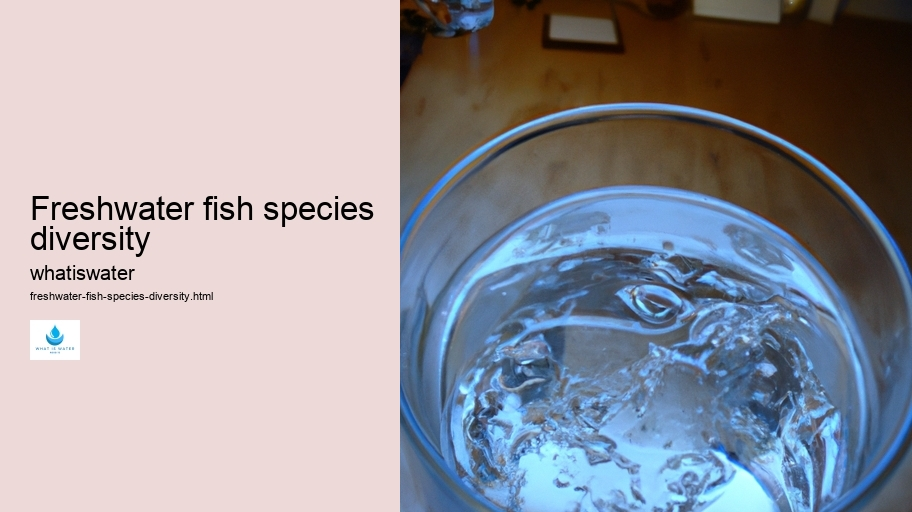
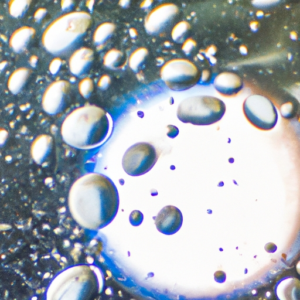

Hydrological Cycle
Hydrological Cycle
Evaporation and transpiration
Condensation and cloud formation
Precipitation and rain patterns
Surface runoff and river systems
Groundwater flow and aquifers
Snowmelt and glacial processes
Water storage in oceans lakes and reservoirs
Soil moisture and infiltration
Water balance and budgeting
Human impact on the hydrological cycle
Marine Ecosystems
Marine Ecosystems
Coral reefs and their biodiversity
Mangrove forests as coastal protectors
Ocean currents and climate regulation
Deepsea habitats and extremophiles
Intertidal zones and estuarine ecosystems
Marine food webs and trophic levels
Freshwater Ecosystems
Freshwater Ecosystems
Conservation efforts for marine species
Marine biogeochemical cycles
Impact of global warming on oceans
Water Resource Management
Water Resource Management
Rivers streams and creeks ecosystems
Lakes ponds wetlands habitats
Biodiversity in freshwater environments
Aquatic plants role in oxygenation
Freshwater fish species diversity
Invasive species impact on freshwater systems
Pollution threats to freshwater sources
Conservation strategies for freshwater biomes
Role of wetlands in flood control
Importance of riparian buffers
Cultural Significance of Water
Cultural Significance of Water
Sustainable water use practices
Desalination technologies for fresh water supply
Wastewater treatment processes
Rainwater harvesting techniques
Management of water during drought conditions
Transboundary water resource politics
Infrastructure for water distribution
Agricultural irrigation efficiency
Urban water demand management
Impact of climate change on water resources
About Us
Contact Us

Freshwater fish species diversity
Hydrogeology
Title: Aquatic Tapestry: The Rich Diversity of Freshwater Fish Species
The Earth's freshwater habitats, from meandering rivers to tranquil lakes, are home to a remarkably diverse array of fish species.
Freshwater fish species diversity - Water Rights
Water Filtration
H2O
Water and Sanitation
Drinking Water
These aquatic environments host a spectrum of life that is as varied in form and function as any found on land.
Waterborne Diseases
Freshwater fish diversity encompasses not only the numerous species but also the wide range of ecological roles these organisms play within their ecosystems.
When we consider the vastness of this diversity, it extends beyond mere numbers.
H2O
Each species is a unique thread in the aquatic tapestry, contributing its own color and texture to the ecosystem. Some, like sturgeons and paddlefishes, are living fossils—relics from an ancient world that have persisted relatively unchanged for millions of years.
Freshwater fish species diversity - Floods
H2O
Water and Sanitation
Drinking Water
Desalination
Hydrogeology
Others, such as cichlids in African lakes, showcase rapid evolution; their speciation events offer scientists valuable insights into evolutionary processes.
Freshwater fishes also display an incredible variety of adaptations to their environments.
Water Rights
There are species like the Anableps anableps or "four-eyed fish," which has eyes adapted to see both above and below water simultaneously—a crucial trait for monitoring predators while feeding at the water surface.
Freshwater fish species diversity - Hydrogeology
Water Rights
Waterborne Diseases
Virtual Water
Water Filtration
H2O
Then there's the electric eel with its astonishing ability to generate potent electrical charges for navigation and defense.
These watery realms face increasing threats due to human activities ranging from pollution and habitat destruction to overfishing and climate change. Consequently, conserving freshwater fish biodiversity becomes crucial—not just for maintaining ecological balance but because these fishes often hold significant cultural and economic value for nearby human populations who rely on them for food and recreation.
In conclusion, our planet's freshwater fish diversity is more than a biological phenomenon; it represents a delicate interplay between nature's artistry and resilience—a treasure trove that calls for our respect and stewardship so future generations can continue marveling at these fascinating creatures that thrive beneath rippling waters.
[Every sixth word selected: home, array, roles, extends, thread, fossils—from, variety, four-eyed simultaneously—a potent face due conserving phenomenon treasure marveling]

Hydrological Cycle
Check our other pages :
Human impact on the hydrological cycle
Water storage in oceans lakes and reservoirs
Urban water demand management
Soil moisture and infiltration
Frequently Asked Questions
What factors contribute to the diversity of freshwater fish species in different aquatic ecosystems?
The diversity of freshwater fish species is influenced by a variety of factors including water temperature, pH levels, dissolved oxygen content, availability of food sources, presence of predators and competitors, habitat complexity (such as the presence of rocks, vegetation, and substrate types), and the connectivity between different water bodies which allows for migration and genetic exchange. Additionally, historical geological events such as glaciation and mountain formation have shaped the distribution and evolution of freshwater species.
How does biodiversity benefit the health and stability of freshwater ecosystems?
Biodiversity ensures ecosystem resilience by providing a wide range of biological functions such as nutrient cycling, water purification, sediment regulation, and maintenance of food webs. Diverse communities can better withstand environmental changes and disturbances (like droughts or floods) because they contain species with varying tolerances and adaptive strategies. High biodiversity also contributes to ecosystem services that are beneficial to humans including fisheries production, recreational opportunities, and supporting overall ecological balance.
How does human activity impact freshwater fish species diversity?
Human activities pose significant threats to freshwater fish diversity through habitat destruction (damming rivers, draining wetlands), pollution (chemical runoffs from agriculture/industry), overfishing/exploitative fishing practices, introduction of invasive species which compete with native fish populations, climate change altering water temperatures/flow patterns affecting life cycles/breeding patterns. Conservation efforts aim at habitat restoration/protection measures; implementing sustainable fishing practices; controlling pollution/invasive species; enforcing legal frameworks protecting endangered populations/species.